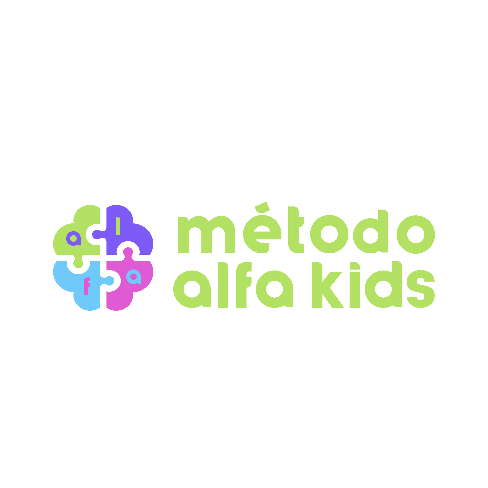

<!DOCTYPE html>
<html lang="pt-br"></html>
  <head>
    <title>Alfakids</title>
    <meta name="viewport" content="width=device-width, initial-scale=1.0">
    <link rel="shortcut icon" type="image/png" href="Img/alfakids_icon.png"> <!-- Imagem da aba navegadores mais antigos-->
    <link rel="icon" type="image/png" href="Img/alfakids_icon.png"> <!-- Imagem da aba navegadores mais novos-->
    <link href="https://fonts.googleapis.com/css?family=DiodrumCyrillic&display=swap" rel="stylesheet"> <!-- Fonte DiodrumCyrillic -->
    <meta name="robots" content="index, follow"> <!-- Permite que os mecanismos de busca façam a indexação do site-->
    <meta name="author" content="Joullyson Rodrigues">
    <meta name="description" content=""> <!-- Breve descrição da página, o texto aparecerá nos resultados do mecanismo de pesquisa-->
    <meta name="keywords" content="">  <!-- Palavras-chave relevantes para a página, otimiza o mecanismo de busca -->
  	<link rel="stylesheet" type="text/css" href="style.css">
  </head>

  <header>
    
    <!-- <nav>
      <ul>
        <li><a href="#intro">Home</a></li>
        <li><a href="#">Sobre</a></li>
        <li><a href="#">Contato</a></li>
      </ul>
    </nav> -->
  </header>

  <body>
    <section id="intro">
  	  <div class="container-1">
  	  	<h1>Descubra como desenvolver a inteligência do seu filho</h1>
  	  	<p><b>Assista</b> ao vídeo e aprenda <b>3 práticas</b> que  desenvolvem na criança a 
           capacidade de pensar fora da caixa, ativando neurônios que facilitam a
           aprendizagem a partir dos primeiros anos, expandindo essa habilidade por toda a vida.
        </p>
  	  	<video controls>
  	  	  <source src="video.mp4" type="video/mp4">
  	  	  Seu navegador não suporta a tag de vídeo.
  	  	</video>
        <p>Você já ficou surpreso com o avanço da inteligência artificial, prometo que vai ficar
           mais ainda quando souber despertar a inteligência natural do seu filho,  <b>assista ao
            vídeo e se nada te convencer em 2 minutos</b>, pode sair dessa página e ir rolar o feed
             do insta. </p>
          
        <p>Se você quer aproveitar a melhor fase para construir uma inteligência infantil acima
           da média, com mais atenção, concentração, equilíbrio emocional e facilidade de aprendizado
            permanente, evitando que seu filho seja apenas mais um na multidão, clique no botão abaixo
             e entre agora no Método Alfakids.</p>

        <a href="#" class="botao" id="first_button">Quero aprender o Método Alfakids</a>
  	  </div>
    </section>
    <section>
      <div class="container-2">
        <p>Você já ficou surpreso com o avanço da inteligência artificial, prometo que vai ficar
          mais ainda quando souber despertar a inteligência natural do seu filho,  assista ao
           vídeo e se nada te convencer em 2 minutos, pode sair dessa página e ir rolar o feed
            do insta. </p>
      </div>
    </section>
  </body>
</html>
